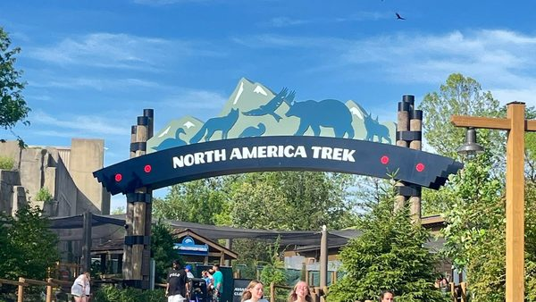

North America Trek, Columbus Zoo
Columbus Zoo & Aquarium · North America Trek

Ladies & Gentle, I would like to introduce you to Phase 1 of the new North America Trek which officially opened on June 20th, the new enclosures replaced the former Swan, Wolf, Bison/pronghorn & prairie dog enclosures to make new & better homes for a couple of residents,
when I walked through the very first time, I was amazed, All the new enclosures are gorgeous and some are the best i’ve ever seen especially the Mexican Wolf, River Otter & Black Bear enclosures and I would recommend you add this on your musty list when you visit the Columbus Zoo.
: Please note that there is a Aviary in phase 1 that is not done yet but will be completed later this summer and the zoo is starting to make the rendering designs on the new enclosures for phase 2!!
Louie posted this on Facebook — open the original post →